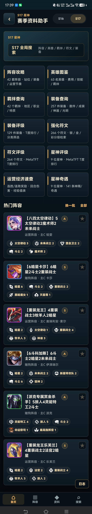

基于《金铲铲之战》的资料查询场景，使用 AI 编程工具辅助完成需求拆解、数据清洗、结构化建库、移动端页面开发、实机调试和 APK 发布，将分散网页与表格资料转化为可安装、可检索、可持续迭代的 Android 应用。

从需求拆解、数据校验到APK发布的完整产品实践
S16 / S17独立切换与数据隔离
英雄 / 装备 / 阵容 / 符文 / 星神 / 评级
移动端适配 / 数据映射 / 搜索优化 / 赛季隔离
完成Android APK打包与GitHub Release发布
从资料检索到策略数据展示，呈现完整的移动端查询体验
首页聚合资料检索、阵容推荐、英雄图鉴、装备查询、评级数据和运营速查等核心入口，并支持赛季数据切换，让用户可以从统一入口快速进入不同查询场景。
首页聚合资料检索、阵容推荐、英雄图鉴、装备查询、评级数据和运营速查等核心入口，并支持赛季数据切换，让用户可以从统一入口快速进入不同查询场景。
Vibe Coding 的含金量在于调试迭代
问题：不同赛季的同名角色（如S16和S17的"亚索"）共用同一套数据源，属性、羁绊和推荐装备出现串用。
处理：通过AI协作识别数据模型中的赛季字段，建立"赛季+角色标识"的复合索引，每个赛季独立存储和查询。
结果：S16和S17数据完全隔离，切换赛季后所有模块自动加载对应数据。
问题：装备在资料中有多种名称（正式名、俗称、简称），且图标资源文件命名不统一，导致搜索和展示频繁出错。
处理：与AI协作建立一个别名映射表，将每个装备的正式名称、俗称、简称和图标路径一一对应，并在数据加载时进行统一解析。
结果：用户输入任何名称变体都能正确匹配，装备图标和评级数据准确展示。
问题：搜索"亚索"时，部分别名匹配结果排在精确名称之前，导致最相关的英雄没有出现在首位。
处理：通过AI分析搜索逻辑，将精确名称匹配设为最高优先级，别名匹配和模糊匹配分层排序，并添加搜索权重字段。
结果：精确搜索命中率提升，搜索结果按相关性排序，用户输入后首个结果即为目标内容。
问题：标签文字过长导致换行错位，卡片内容溢出容器，底部导航栏被iPhone安全区遮挡。
处理：通过实机截图→AI分析→样式修正的循环迭代，针对性调整文字截断、容器尺寸和safe-area适配。
结果：所有标签单行显示不换行，卡片内容完整不溢出，底部导航适配iPhone刘海屏安全区。
通过需求拆解、数据建模、实机调试和持续迭代，完成移动端资料工具的产品化落地
从"资料难查、信息分散"的使用痛点出发，拆解出资料检索、分类筛选、详情展示、版本切换和移动端适配等核心模块，明确优先级与迭代方向。
整理来自网页与表格的资料，进行清洗、字段统一、图标匹配和别名映射，建立可本地查询的结构化数据，并处理不同版本之间的数据隔离。
使用 AI 编程工具辅助完成页面开发和功能实现，搭建首页、检索、详情、评级、阵容等核心页面，并根据移动端使用场景设计信息层级。
通过手机实机截图持续发现并修正问题，反复优化标签换行、省略号、卡片高度、图标对齐、导航栏安全区和搜索结果排序等细节。
完成 Android APK 打包、版本命名、发布链接整理和 GitHub Release 分发，使项目从本地原型变成可安装、可下载、可展示的作品。
从原型到发布，见证产品的成长轨迹
完成基础页面与本地数据读取
从单赛季扩展至S16/S17
完善搜索、映射与移动端布局
完成APK打包与GitHub Release
支持 Android 7.0 及以上版本，安装包约 53MB
💡 首次安装可能需要允许"未知来源"应用安装权限
共同创造有价值的产品